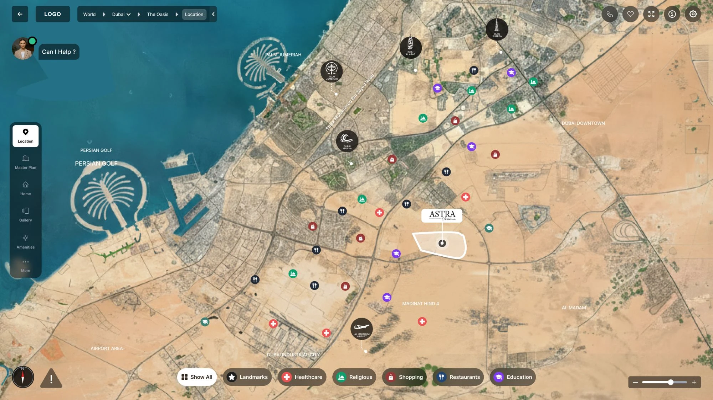
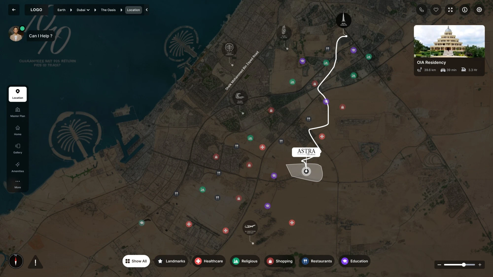
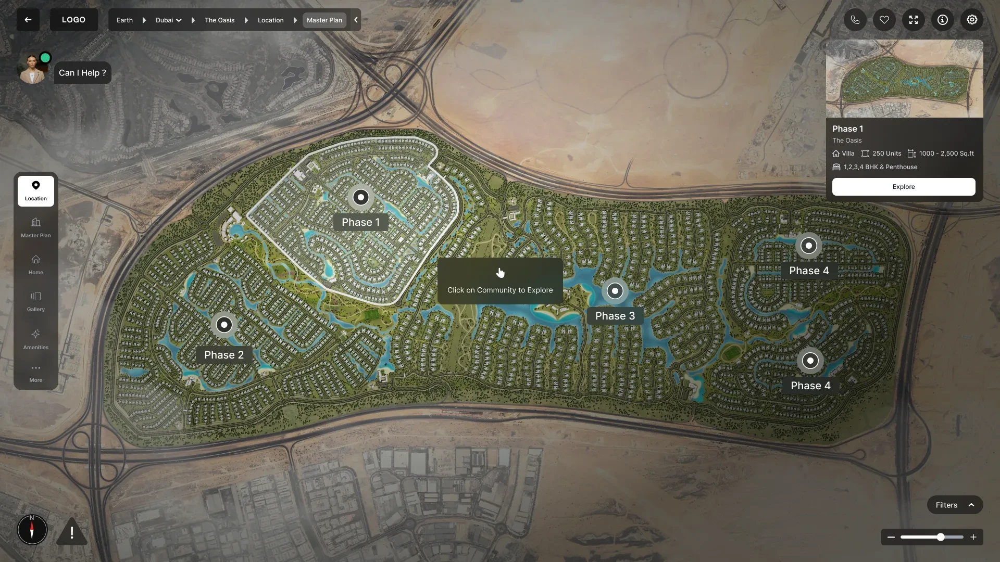
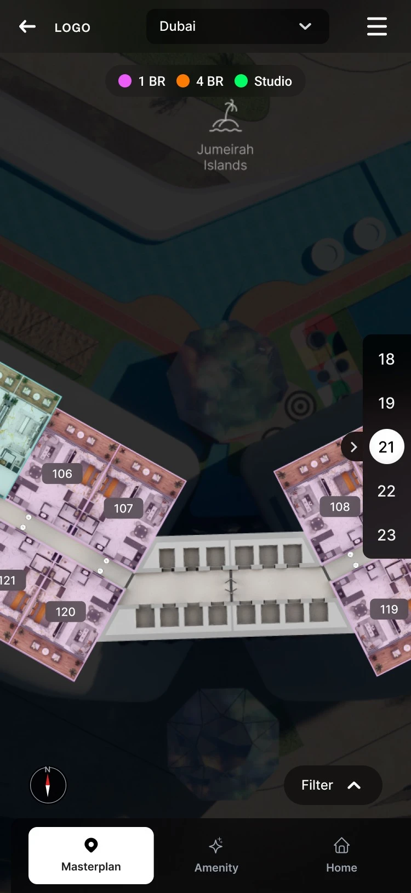
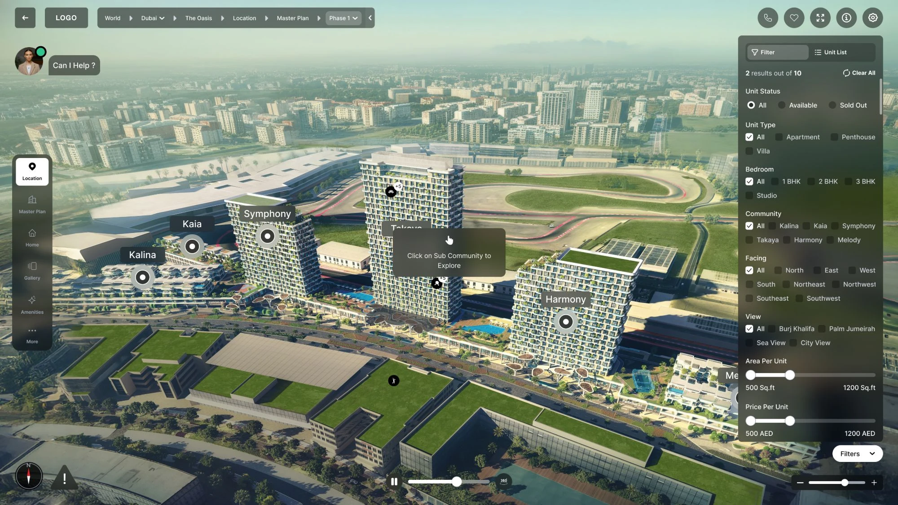
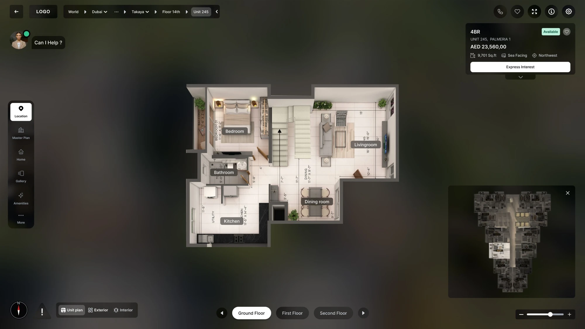

- My role
- UX Designer
- Tools
- Figma, Figma Make
- Company
- PropVR
SpatialLite Product design · PropVR
Helping home buyers go from a city map to a single home, without getting lost
SpatialLite (previously WebLite) is PropVR's browser tool for exploring real-estate developments, from a city map down to one unit's plan.
I designed how that journey holds together: the cards, pins and plans along the way.
Context Standing in for the site visit
A buyer can't always visit the site, so the product stands in for the visit: where the project is, what's around it, which tower, which floor, which home.
As more developers came onto it, each part had grown to fit its own project. It worked, but it no longer felt like one product.
The problem Four views that had to feel like one journey
Buyers move through a satellite map, a master plan, a 3D building and a floor plan. Each works differently, so it's easy to lose your place.
Pins had to mean the same thing everywhere
Something you can open, on every level.
The way back had to stay in sight
Three levels deep, getting back up shouldn't take guessing.
Cards had to stop being one-offs
Every kind of card had its own layout and its own order of facts.
The journey One path, from the city down to a unit
I laid the journey out as levels. Each one always shows where you are, what you can open and how to get back.
- LocationWhere is it?
- Master planWhat's in it?
- PhaseWhich part?
- BuildingWhich tower?
- FloorWhich level?
- UnitWhich home?
It starts with the neighbourhood
A map with the project outlined and landmarks pinned by kind. Choosing one draws the route and the travel time.


The same few things on every level
A breadcrumb, a rail of sections, and pins that open a card before they take you anywhere.


- Where you are
A breadcrumb back to every level above.
- The same places
The rail of sections stays put.
- A pin, then a boundary
Choosing a phase outlines it on the plan.
- A card first
A summary and one action: Explore.
- Floors as a ladder
Step through floors while the plan follows.
And it ends at one home
Pick a phase, a tower and a floor, and land on a unit's plan with its price, size and view beside it.


This is a small preview of my work. to know more.